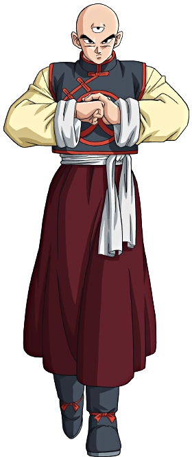

androide 14
Era un androide muy serio, casi no hablaba exceptuando varias ocasiones en las que se dirigía hacia sus oponentes con frialdad
ingresa

Androide 15
Fue un androide muy confiado en sus combates, al igual que sus compañeros no le importaba matar a los que se le atrabesara
ingresa

Androide 17
El rasgo más distintivo en la personalidad de 17 es su exceso de confianza en sí mismo. Siendo al inicio anarquista e imprudente
ingresa

androide 19
A diferencia de sus "hermanos", el Androide Número 19 carece de una personalidad independiente.Es robótico, callado y leal a su creador.
ingresa

Androide 16
Se caracterizó por ser un androide tranquilo y pacifista, amaba la naturaleza, a los seres vivos y a las plantas
ingresa

Androide 18
Inicialmente de personalidad confiada y de humor sarcástico que más tarde se convierte en el rasgo más notable de su personalidad.
ingresa

androide 13
El Androide Número 13 fue creado con el un único objetivo de matar a Son Goku, afirmando que mataría a cualquiera que se interponga.
ingresa

Dende DBS
es un pequeño namekiano, que vivía en el poblado de Moori, junto a su hermano Scargo y otros tantos de su especie.
ingresa

Babidi
conocido también como Bóbidi o Bábidi, es un poderoso hechicero madoshi, hijo del gran mago Bibbidi,
ingresa

Bardock
es un saiyano de clase baja proveniente del Planeta Vegeta del Universo 7. Pertenece al Ejército Saiyano, que está bajo el liderazgo del Rey Vegeta
ingresa

Beerus
Es muy juguetón, como la mayoría de los gatos. Además, tiene cierta obsesión por la comida. Sus gestos felinos y su variedad de expresiones faciales
ingresa

Bulma
posee un gran carisma, un gran sentido de la aventura, inteligencia sin igual y aparte, también cuenta con una personalidad centrada y decidida.
ingresa

Buu Gordo
el primer Boo mencionado se convierte en un ser absolutamente benévolo y, por ende, toda la maldad del individuo original.
ingresa

celula
en su forma imperfecta, se demostraba completamente enfocado en alcanzar su forma perfecta,
ingresa

Chichi
mantenía una personalidad dulce y gentil además de ser ingenua y descuidada. A esto se le suma su forma dialectal de hablar algo tosca
ingresa

dende
es un pequeño namekiano, que vivía en el poblado de Moori, junto a su hermano Scargo y otros tantos de su especie.
ingresa

Dispo
es uno de los miembros del Equipo Universo 11 como uno de los soldados más poderosos de las Tropas del Orgullo
ingresa

Dodoria
Tiene un comportamiento bastante vulgar e imperativo, siendo muy distinto a su compañero Zarbon. Generalmente pierde la paciencia
ingresa

Dr.gero
fue un malvado científico que pertenecía al Ejército del Listón Rojo. Al ser desmantelado el ejército por Son Goku
ingresa

Yamcha
Yamcha se caracteriza originalmente como un guerrero empático, algo rudo y astuto pero que teme a nada más que hablar con las mujeres.
ingresa

Frezzer
es un alienígena mutante, brutal dictador y líder del Imperio Galáctico del Universo 7 con el apoyo estratégico .
ingresa

Ginyu Force
son un grupo de mercenarios muy poderosos bajo el mando de Freeza, para conquistar planetas en Dragon Ball Z.
ingresa

ginyu
es el líder del la élite de mercenarios de mayor prestigio del Ejército de Freeza, la cual lleva el nombre de Fuerzas Especiales Ginew
ingresa

gohan
Gohan es un joven bastante tímido desde su infancia, con carácter bondadoso (inculcado por sus padres)
ingresa

Gotenks
Parece que Gotenks solo tiene los peores rasgos de la personalidad de Goten y Trunks. Es egoísta, grosero, presumido
ingresa

Gran kaio sama12
el Kaio de mayor rango del otro mundo y se encarga de vigilar a los demás Kaiō. Su apariencia es la de un anciano con barba larga y canosa
ingresa

Gran Kaio shin
se convirtió en la faceta más dominante en Boo Gordo, aún viviendo actualmente dentro de su cuerpo a través de su espíritu.
ingresa

Grand priest
En el universo de Dragon Ball Super, el Gran Sacerdote (también conocido como el Gran Sacerdote Celestial)
ingresa

jiren
Como varios personajes de Dragon Ball Super, la personalidad de Jiren es diferente entre el anime y manga, con sutiles diferencias.
ingresa

kaio del este
solo aparece en el anime y es la única integrante femenina de todos los Kaiō. Gusta de los retos y de entrenar duramente a sus discípulos
ingresa

kaio del oeste
es el rival del Kaiō del Norte en el anime (en el manga no hace aparición) y hace presencia durante el torneo de artes marciales
ingresa

kaio del norte
comúnmente llamado solo Kaiō-sama es el encargado del gobierno de la parte norte de la Galaxia, donde se encuentra la tierra.
ingresa

kaio del sur
es el único Kaiō, junto con el Kaiō del Norte, en aparecer en el manga. La galaxia que debe vigilar se caracteriza por ser pacífica
ingresa

lunch
Lunch es uno de los personajes femeninos con más cambios de atuendos en toda la franquicia.
ingresa

Marcarita
Tiene una manera de hablar algo única, y siempre se queja de la manera de ser de Kai y Vermoud
ingresa

mr satan
En una primera impresión, se da a conocer como un hombre arrogante, presumido, fanfarrón y manipulador
ingresa

nail
Nail tiene el honor de ser el protector principal de el "Gran patriarca" de Namek el es un gran namekiano y su enfrntamiento
ingresa

picolo
Piccolo fue originalmente un villano, al igual que su padre. Durante el Arco de la 23.ª Edición del Torneo Mundial
ingresa

raditz
Raditz es un hombre arrogante y despiadado, formado bajo los ideales del más fuerte de la cultura saiyana
ingresa

roshi
Le gusta contar historias de su pasado, ver televisión, lee revistas para adultos y tomar siestas por la tarde.
ingresa

Shin en Bucchigiri
fusión entre Shin y Kibito. Ellos fueron unidos permanentemente mediante el uso de los míticos pendientes Pothala.
ingresa

Tenshinhan
Ten Shinhan marcó dos personalidades diferentes, al principio de la historia, era un hombre cruel, presumido y soberbio
ingresa

Toppo
Es un guerrero con un inmenso sentido de la justicia y su temperamento es descrito como alguien de sangre caliente.
ingresa

trunks
es un mestizo entre humano terrícola y Saiyano nacido en la Tierra, e hijo de Bulma y Vegeta y necio este niño
ingresa

vegeta
Vegeta es un saiyano frío, poco expresivo y lleno de resentimiento por la traición de Freeza hacia su raza.
ingresa